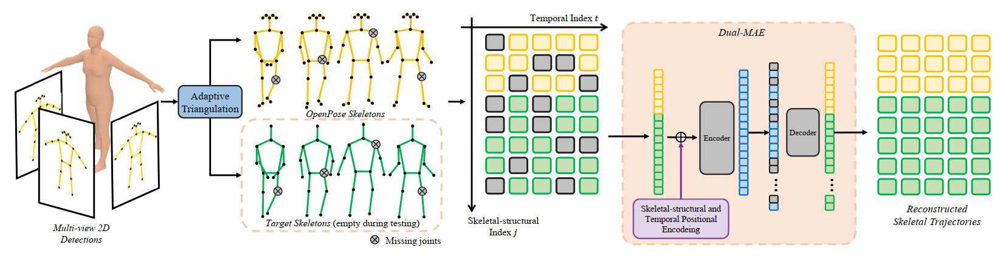

A Dual-Masked Auto-Encoder for Robust Motion Capture with Spatial-Temporal Skeletal Token Completion
Junkun Jiang (1), Jie Chen* (1), Yike Guo (1,2)
(1) Department of Computer Science, Hong Kong Baptist University, Hong Kong SAR, China
(2) Data Science Institute, Imperial college London, London, UK
* Corresponding author
Code | Paper (preprint) | Supplementary | Dataset
Abstract
Multi-person motion capture can be challenging due to ambiguities caused by severe occlusion, fast body movement, and complex interactions. Existing frameworks build on 2D pose estimations and triangulate to 3D coordinates via reasoning the appearance, trajectory, and geometric consistencies among multi-camera observations. However, 2D joint detection is usually incomplete and with wrong identity assignments due to limited observation angle, which leads to noisy 3D triangulation results. To overcome this issue, we propose to explore the short-range autoregressive characteristics of skeletal motion using transformer. First, we propose an adaptive, identity-aware triangulation module to reconstruct 3D joints and identify the missing joints for each identity. To generate complete 3D skeletal motion, we then propose a Dual-Masked Auto-Encoder (D-MAE) which encodes the joint status with both skeletal-structural and temporal position encoding for trajectory completion. D-MAE’s flexible masking and encoding mechanism enable arbitrary skeleton definitions to be conveniently deployed under the same framework. In order to demonstrate the proposed model’s capability in dealing with severe data loss scenarios, we contribute a high-accuracy and challenging motion capture dataset of multi-person interactions with severe occlusion. Evaluations on both benchmark and our new dataset demonstrate the efficiency of our proposed model, as well as its advantage against the other state-of-the-art methods.
Pipeline

System diagram for the proposed D-MAE. We first adopt an off-the-shelf 2D pose detector to estimate 2D poses for each input view. The Adaptive Triangulation module filters 2D noisy joints and reconstructs 3D poses with identification. We encode the input 3D poses via skeletal-structural and temporal position encoding in the proposed D-MAE to generate complete 3D skeletal motion.
Demo
Citation
1 | @inproceedings{jiang2022dmae, |